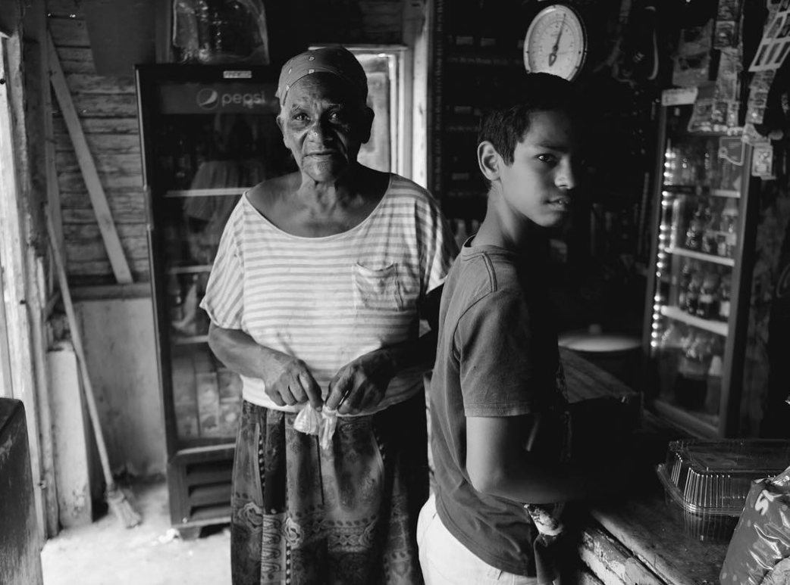
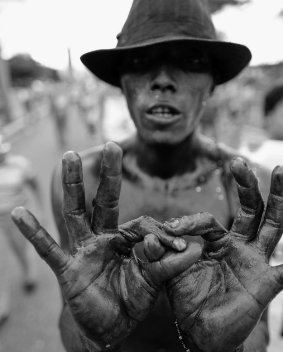

1 / 5
You tired Bro?
2 / 5

Time Traveling
3 / 5

De compras con la Abuela
4 / 5

Una seña en Blanco y Negro
5 / 5
Época de corte
De esas que logras detener en el tiempo, para luego interpretarlas; ver un futuro, una ilusión, un sueño... o simplemente una mirada.
Enrique tavarez, amante de la fotografía a blanco y negro. Mercadologo de profesión. Inspirado por steve jobs en el area laboral y por los fotógrafos Ansel Adams Platon y Peter Coulson. Vivo y respiro la Formula 1.
Entre los placeres de mi vida y de las cosas que mas me gusta hacer en mi tiempo libre. Bueno, yo soy una mezcla entre tantas cosas, por decirte. Soy muy tradicional, siempre un café es el precursor de buenas conversaciones. Otra cosa que disfruto bastante son las motos, Nunca he tenido una pero es uno de mis deseos en los proximos 5 años.